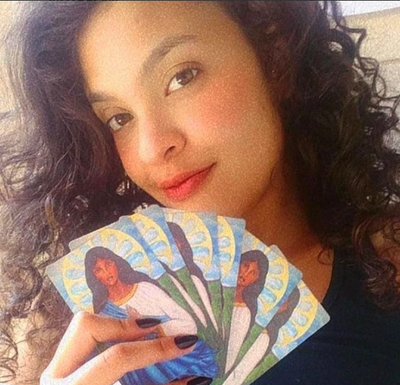
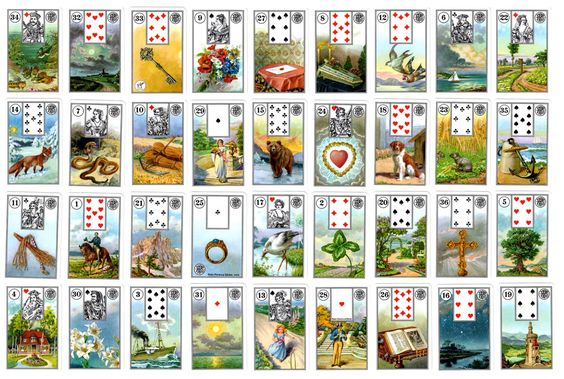

Como tudo começou:
Iniciei os estudos do Baralho Cigano no inicio da pandemia, sempre tive curiosidade acerca de oraculos e uma amiga
me deu a oportunidade de fazer o curso dela e ir pagando conforme as consultas que eu fosse prestar. O que era para ser
um hobbie começou logo de inicio como forma de arrecadação monetária para quitar o valor do curso, e assim fui jogando
para amigos, conhecidos, amigos de amigos, até que comecei a ter consulentes de vários locais diferentes do Brasil, e até do mundo.

Curiosidade sobre as cartas:
O Baralho Cigano, por mais contraditório que pareça, não foi criação dos povos ciganos - pertencentes a etnia - o baralho inicialmente
foi entitulado de Baralho Lenormand em homenagem a responsável por sua criação, Madame Lenormand, entretanto para popularizar o uso desse oraculo
ele começou a ser divulgado como Baralho Cigano. Ademais, há também quem conteste Madame Lenormand como pessoa responsável pela criação desse oraculo.
Em rápidas pesquisas pela internet poderá encontrar informações que explicam a fama de Madame
Lenormand e do Baralho Cigano no século XIX, já que essa renomada cartomante realizava consultas para Joséphine de Beauharnais - esposa de Napoleão - e há
histórias de que o próprio Napoleão chegou a se consultar com ela.
O Baralho Cigano é composto de 36 cartas, diferente do Tarot que possui em sua composição 78. Ele foi criado com o intuito de
trazer conselhos práticos aos consulentes, ao contrário do Tarot que possui uma vertente mais filosófica, trazendo consigo mais análises e simbolismos, tanto
que foi estudado pelo psicologo analista Carl Jung. Assim como o Tarot, o Baralho Cigano também possui em sua composição numerologia
Veja a imagem ao lado com as 36 cartas do Baralho Lenormand, popularmente conhecido como Baralho Cigano
